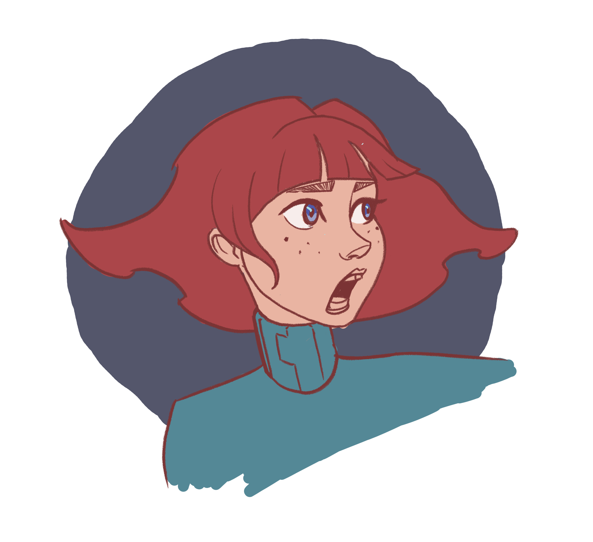
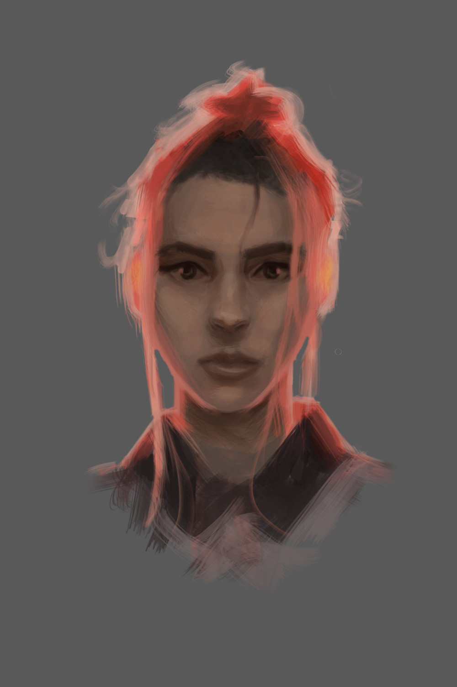
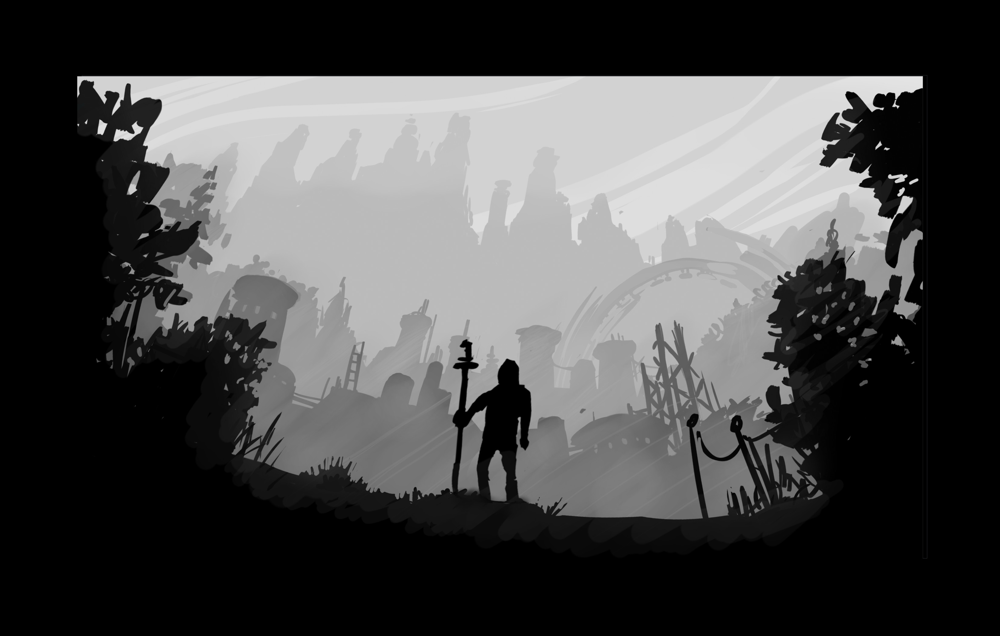

Games
Digital Painting Course
← Back to Art


What I learned
- Various different digital painting techniques
- How to create concept art
- Photo realistic drawing
- Character design
Type: Learning Project
Medium: Digital Art
Tools: Krita
Topics: Concept Art, Character Design, Digital Painting
About
This is a course I took right around the time when I had just finnished and released my game Rogue Conflict.
I was very happy with how the the pixel art style Rogue Conflict ended up looking, but for my next game - on which I started working on directly afterwards - I wanted to try out a new style and to level up my drawing skills before heading into. Which is why I took this course as a source of inspiration and to learn some new tricks of the trade.
